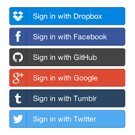

A simplified tale about security.
Presented by Alex Simons
1. Support many social logins.
2. I shouldn't hate myself.
Eyes on the prize.
JSON you can give to your APIs!
JSON that you can trust!
JSON never give you up!
JSON never let you down!
It's just JSON!
{
"preferred_username": "DatBoi",
"given_name": "Alex",
"name": "Alex Simons",
"family_name": "Simons",
"email": "alexsimons9999@gmail.com",
"roles": [
"presenter_dude"
],
}
Built-in tamper proof technology!
{
"iss": "https://google.com/fancy-json-maker",
"exp": 1594649668,
// Other stuff...
}
{
"kid": "694Pa2KEd7kyAVc420OTlsrLO90017s/w5RRJ2UcLTU=",
"alg": "RS256"
}
Issuer Sample
OAuth social login buttons includes a bonus gift.
The power to get more FHJ (eg refresh)!
Some button's Refresh Tokens are not always FHJ.
A bunch of nerd stuff happens and I get this.
interface OAuthLoginButtonGift {
access_token: FancyHeaderJSON;
refresh_token: FancyHeaderJSON | SomethingElse;
}
It depends on what button I clicked.
And also what I asked for as well.
Define the scopes of what my JWT can do
I can ask for user's: Email or API access
My JWT now can use API's such as
https://api.github.com/users/octocat/followers
Let me show you a quick GitLab Demo!
It could become a GitHub resource server!
Which means only accepts JWT from the GitHub Issuer.
That's good for building apps just for GitHub.
I need all the buttons and trust only one JWT issuer!
Something that figures out who users are via social sites.
Something that issues/re-issues JWTs.
Authentication: who are you, bruv?
Authorization: what are you allowed to do?
Nope.
I can just do stuff on their behalf.
What's the difference?
interface OAuthLoginButtonGift {
access_token: FancyHeaderJSON;
refresh_token: FancyHeaderJSON | SomethingElse;
}
interface OpenIDConnectButtonGift extends OAuthLoginButtonGift {
id_token: FancyHeaderJSON;
}
Just by adding the openid scope
As an example: email, profile, openid
These social sites are a user's Identity Provider
Still tied to one JWT/User issuer.
Trusted JWT/User Issuer
Can consume other trusted JWT/User Issuers
Can also authenticate users itself.
I don't need to update my code all the time.
My API does not care where users come from.
Does exactly what other Identity Broker & Authorization Servers do.
Such as: Okta, Auth0, and Keycloak
There are some small pitfalls
There is a work around
new AuthorizationRequest(
{
client_id: initialConfigurations.clientID,
redirect_uri: initialConfigurations.callbackURI,
scope: 'openid profile email',
response_type: AuthorizationRequest.RESPONSE_TYPE_CODE,
extras: {
identity_provider: 'LoginWithAmazon', // important bit
}
}
);
My users will never have to know Cognito exists
{
"sub": "cae2a88f-98e7-4250-ae10-4e032b5c5371",
"cognito:groups": [
"us-east-1_DIccfJcVB_Google"
],
"token_use": "access",
"scope": "openid profile email",
"auth_time": 1594938816,
"iss": "https://cognito-idp.us-east-1.amazonaws.com/us-east-1_AkCtj23zR",
"exp": 1595930973,
"iat": 1595927373,
"version": 2,
"client_id": "kjRbwelUwotM8arl823bw",
"username": "google_111960955573774759753"
}
There is ID token customization...
It's getting better, but still...
Maybe you need to know what you are doing?
One JWT Issuer that my code trusts
I know which buttons I can use to support the above.